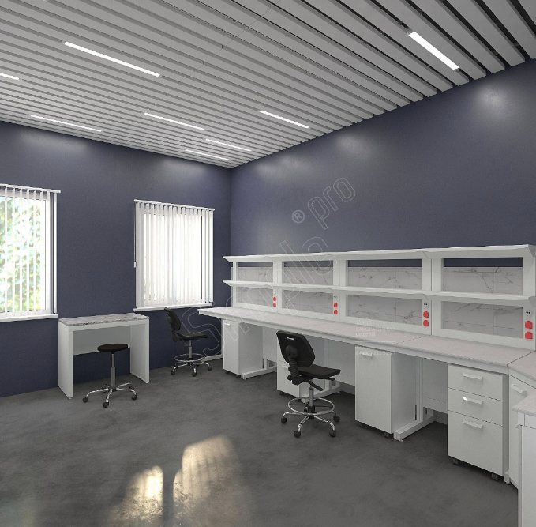
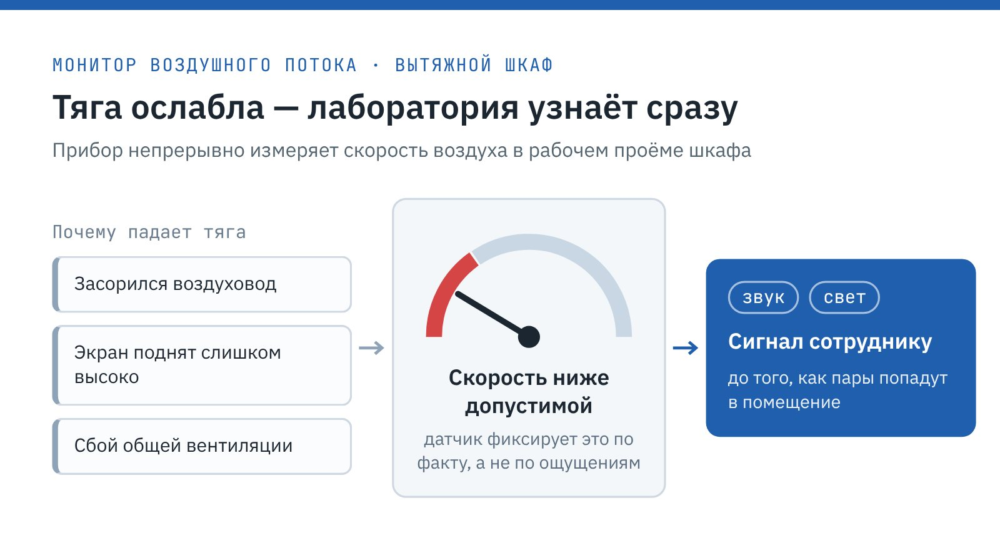
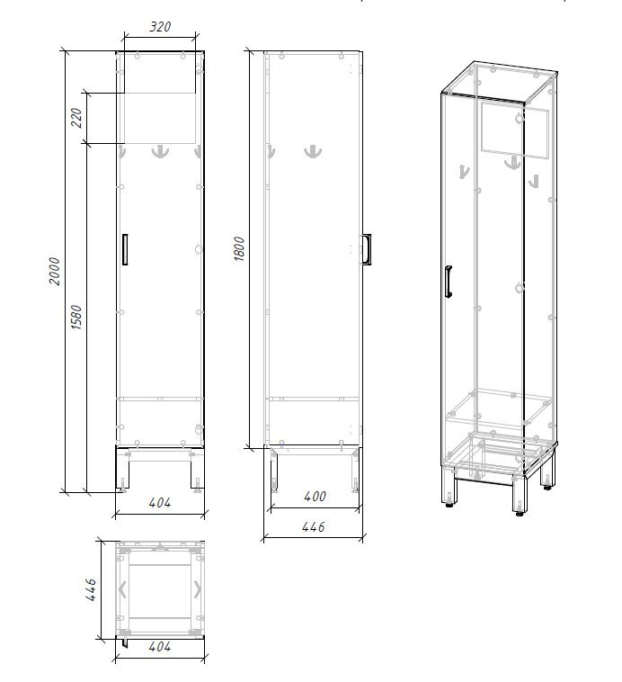
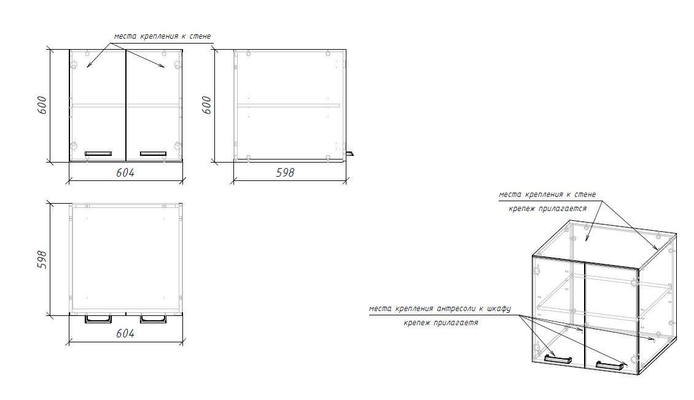
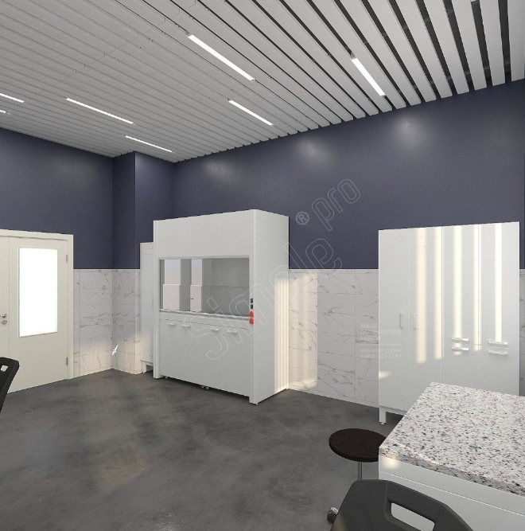

Simple PRO · Кейс · B2B
Кейс производителя лабораторной мебели: переоснащение старой лаборатории
Задача
Рассказать, как новая мебель встаёт в старое помещение с электрощитами и коммуникациями на стенах.
Решение
Свела доработки в таблицу «задача — причина — решение», объяснила, зачем вытяжным шкафам мониторы потока, указала размеры изделий и этапы госзакупки.
Результат
Кейс о безопасности и точной подгонке, без общих слов о «высоком качестве».
Лабораторная мебель для ГосНИИИ военной медицины Минобороны России
Государственный научно-исследовательский испытательный институт военной медицины Министерства обороны Российской Федерации (Санкт-Петербург) проводит исследования в интересах обороны и безопасности страны. Здесь разрабатывают и испытывают медицинские средства защиты личного состава войск и технику медицинской службы.
Simple PRO работает с институтом примерно с 2017 года. За это время мы выполнили несколько проектов, и сотрудники ГосНИИИ ВМ хорошо знают нашу продукцию. В сентябре 2026 года стартовали очередные работы: переоснащение небольшой лаборатории, оборудованной много лет назад.
Направления работы института
Деятельность ГосНИИИ ВМ охватывает полный цикл от научной идеи до проверки готового изделия. Работа строится по трём направлениям:
-
Организация исследований. Планирование и научное обеспечение работ, которые ведутся по заказу Министерства обороны.
-
Разработка. Создание медицинских средств защиты военнослужащих и техники для медицинской службы.
-
Испытания. Проверка свойств и надёжности новых средств в лабораторных условиях.
Испытательная лаборатория предъявляет к мебели особые требования. Сотрудники работают с химически активными веществами, растворами и аэрозолями, а значит, рабочие поверхности должны выдерживать агрессивную среду. Защиту персонала обеспечивают прежде всего вытяжные шкафы: они удаляют пары из рабочей зоны раньше, чем те попадут в воздух помещения. Не менее важна продуманная расстановка, при которой пути эвакуации и подходы к щитам остаются свободными.
Запрос на переоснащение
Институт переоснащает свои лаборатории по очереди. Очередное обращение пришло от службы снабжения: требовалось заменить мебель в одной из старых лабораторий. Специалисты хотели заранее увидеть, где встанет каждое изделие, и наши дизайнеры подготовили планировку с визуализацией.

Благодаря опыту прошлых проектов сотрудники института сразу выбрали модели из каталога, и почти все пожелания удалось выполнить серийными позициями. Отдельно заказчик попросил доукомплектовать вытяжные шкафы мониторами воздушного потока. Прибор непрерывно измеряет скорость воздуха в рабочем проёме и подаёт звуковой и световой сигнал, как только она опускается ниже допустимого значения.
Тяга вытяжного шкафа может ослабнуть незаметно для сотрудника: из-за засорения воздуховода, слишком высоко поднятого экрана или сбоя общей вентиляции. Монитор сообщает о проблеме сразу, а не после того, как пары попали в помещение.
Для института, который сам разрабатывает средства защиты, такой контроль стал естественной частью требований к безопасности. Мониторы устанавливают на шкафы ещё на производстве, и лаборатория получает оборудование, готовое к работе.
Доработки под старое помещение
Помимо мониторов, при проектировании возникли ещё три задачи. Все они связаны с особенностями старого помещения: инженерными системами на стенах и нехваткой места для хранения.
| № | Задача клиента | Причина | Решение Simple PRO |
|---|---|---|---|
| 1 | Сделать вырез в задней стенке гардеробного шкафа | На стене находится автомат отключения питания лаборатории, к нему нужен постоянный доступ | Выполнили вырез в задней стенке шкафа |
| 2 | Добавить декоративные панели на пристенные столы | Закрыть участки стен, по которым проходят коммуникации и провода | Установили декоративные панели |
| 3 | Установить антресоли на шкафы | Получить дополнительное место для хранения | Разработали антресоли для шкафов |
Гардеробный шкаф высотой 2000 мм встал вплотную к стене с электрощитом. Проём размером 320 × 220 мм в верхней части задней стенки открывает доступ к автомату, и отключить питание можно, не сдвигая мебель. Вырез расположен выше крючков для одежды и не мешает пользоваться шкафом.

На пристенных столах шириной 1205 мм со стеллажом-надстройкой смонтировали две панели, нижнюю и верхнюю. Они закрывают пространство между полками, защищают провода от случайных повреждений и служат аккуратным фоном для розеток на надстройке.

Антресоли размером 604 × 598 × 600 мм с двумя дверцами крепятся одновременно к шкафу и к стене.

Крепёж входит в комплект, места под него заложены в конструкцию, так что монтаж не требует доработки на месте.
Сроки и ход работ
Закупки института всегда проходят через конкурс, и Simple PRO участвует в них на общих основаниях, соперничая ценой и характеристиками. Основные вехи проекта:
-
закупка — конкурс через систему госзакупок;
-
заключение договора — сентябрь 2026 года;
-
окончание работ — октябрь 2026 года;
-
текущий этап — сборка и установка мебели.
Уложиться в короткий срок между подписанием договора и монтажом помогло собственное производство. Изделия выпускают на заводе Simple PRO, и доработки вроде выреза или антресолей не задерживают поставку.
Что изменилось в лаборатории
Пожелания заказчика выполнены полностью, и мебель встала в помещение без перестройки. Главные изменения после переоснащения:
-
Вытяжное оборудование предупреждает сотрудников о падении тяги звуковым и световым сигналом.
-
Автомат питания остаётся доступным, хотя перед ним стоит гардеробный шкаф.
-
Коммуникации на стенах скрыты за панелями и защищены от повреждений.
-
Антресоли добавили места для хранения без расширения помещения.
Сотрудники получили современное рабочее пространство на прежней площади. Перепланировка не понадобилась: мебель подогнали под существующие инженерные системы.
Проект лаборатории от Simple PRO
Электрощиты и проводка на стенах старого помещения не помешают установке новой мебели, если учесть их на этапе планировки. Пришлите чертёж с размерами, отметками окон, дверей и точек подключения, и за 5 рабочих дней мы подготовим бесплатный 3D-эскиз.

Серийные лабораторные шкафы, столы и вытяжное оборудование можно купить по каталогу или заказать с доработками. Для консультации звоните 8 (800) 222-32-97 или пишите на info@simple-pro.com.